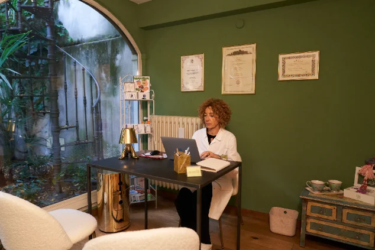

La curiosità e la ricerca del perché mi accompagnano da sempre. È da qui che nasce il mio percorso: una formazione scientifica costruita attraverso la Laurea in Scienze Biologiche, il Dottorato di Ricerca in Chimica Biologica e Biologia Molecolare, il Master in Giornalismo Scientifico e il Master in Scienza dell’Alimentazione e Dietetica Applicata.
Dopo anni dedicati alla ricerca scientifica, ho scelto di portare le mie competenze nel campo della nutrizione e della consulenza nutrizionale.
Oggi lavoro come Biologa Nutrizionista a Milano e a Trezzano sul Naviglio, mettendo insieme formazione scientifica, competenze in nutrizione clinica, aggiornamento continuo e attenzione alla persona. Perché la nutrizione riguarda non solo ciò che mettiamo nel piatto ma anche la nostra storia, le nostre abitudini, le esigenze del momento e gli obiettivi che vogliamo raggiungere.

Il mio metodo
Ogni persona ha una storia diversa e, per questo, anche il percorso nutrizionale deve essere personalizzato.
Parto dalla storia clinica e alimentare, dallo stile di vita e dagli obiettivi della persona, integrando, quando necessario, le informazioni derivanti dagli esami e dalla valutazione della composizione corporea.
Non propongo schemi uguali per tutti: scelgo le strategie più appropriate in relazione alla situazione individuale e alle evidenze scientifiche disponibili.
La mia formazione nella ricerca mi ha insegnato a cercare le fonti, valutare criticamente le informazioni e riconoscere ciò che è supportato da evidenze scientifiche.
Per questo considero l'aggiornamento continuo parte integrante del mio lavoro. Le indicazioni nutrizionali nascono dall'incontro tra conoscenze scientifiche, esperienza professionale e caratteristiche della persona che ho davanti.
Un piano alimentare deve essere compatibile con la vita quotidiana per essere sostenibile e seguito nel tempo.
Elaboro percorsi che tengono conto le esigenze personali, familiari e del contesto clinico.
L'alimentazione rappresenta anche un importante strumento di supporto nella gestione di condizioni patologiche.
Divulgazione
Alla pratica professionale affianco la mia attività di divulgazione scientifica, nata dall'incontro tra la formazione nella ricerca e la passione per la comunicazione.
Partecipo a eventi e iniziative sul territorio di Milano, anche in collaborazione con realtà locali, e svolgo attività di educazione alimentare nelle scuole e in altri spazi del Comune di Milano, con l'obiettivo di avvicinare le persone ai temi della nutrizione e della salute attraverso informazioni corrette e strumenti pratici.
Ho inoltre collaborato alla realizzazione di contenuti per testate giornalistiche e realtà editoriali scientifiche e sanitarie, traducendo temi complessi in un linguaggio accessibile, senza rinunciare al rigore delle fonti.
È lo stesso approccio che porto anche nei miei canali social: informare con chiarezza, senza banalizzare la complessità della nutrizione e senza seguire mode o semplificazioni.
Articoli
Gli articoli pubblicati su Corriere Style.
Formazione
| Titolo | Ambito |
|---|---|
| Master | Scienza dell'Alimentazione e Dietetica Applicata |
| Master | Giornalismo, Comunicazione Scientifica e Istituzionale |
| Dottorato di ricerca (PhD) | Chimica Biologica e Biologia Molecolare |
| Laurea | Scienze Biologiche |
Iscrizioni e società scientifiche
Ordine dei Biologi
Iscritta all'Albo
SINU
Società Italiana di Nutrizione Umana
SIO
Società Italiana dell'Obesità
Dott.ssa Luigia Atorino — Biologa Nutrizionista · Profilo MioDottore